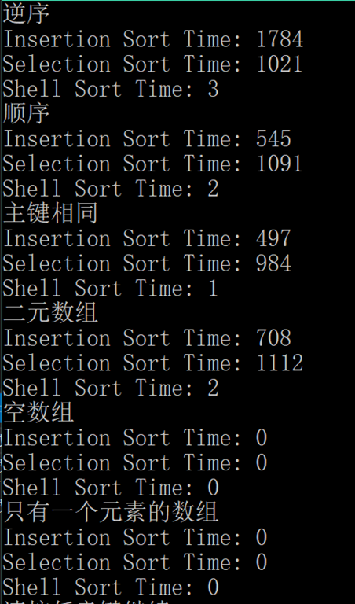

© 2019 《算法（第四版）》C# 题解 | Provided By 沈星繁
搜索解答
目前已完成到 2.5
2.1.34
上次更新：2019-02-13
发现了题解错误/代码缺陷/排版问题？请点这里：如何：提交反馈 。
题目
2.1.34
罕见情况。
编写一个测试用例，
调用 sort() 方法对实际应用中可能出现困难或极端情况的数组进行排序。
比如，数组可能已经是有序的，或是逆序的，
数组中的所有主键相同，数组的主键只有两种值，大小是 0 或 1的数组。
解答

代码
using System;
using Sort;
namespace _2._1._34
{
/*
* 2.1.34
*
* 罕见情况。
* 编写一个测试用例，
* 调用 sort() 方法对实际应用中可能出现困难或极端情况的数组进行排序。
* 比如，数组可能已经是有序的，
* 或是逆序的，
* 数组中的所有主键相同，
* 数组的主键只有两种值，
* 大小是 0 或 1 的数组。
*
*/
class Program
{
static void Main(string[] args)
{
InsertionSort insertionSort = new InsertionSort();
SelectionSort selectionSort = new SelectionSort();
ShellSort shellSort = new ShellSort();
// 逆序
Console.WriteLine("逆序");
Console.WriteLine("Insertion Sort Time: " + ReverseSortTest(insertionSort));
Console.WriteLine("Selection Sort Time: " + ReverseSortTest(selectionSort));
Console.WriteLine("Shell Sort Time: " + ReverseSortTest(shellSort));
// 顺序
Console.WriteLine("顺序");
Console.WriteLine("Insertion Sort Time: " + SortedSortTest(insertionSort));
Console.WriteLine("Selection Sort Time: " + SortedSortTest(selectionSort));
Console.WriteLine("Shell Sort Time: " + SortedSortTest(shellSort));
// 主键相同
Console.WriteLine("主键相同");
Console.WriteLine("Insertion Sort Time: " + EqualSortTest(insertionSort));
Console.WriteLine("Selection Sort Time: " + EqualSortTest(selectionSort));
Console.WriteLine("Shell Sort Time: " + EqualSortTest(shellSort));
// 二元数组
Console.WriteLine("二元数组");
Console.WriteLine("Insertion Sort Time: " + BinarySortTest(insertionSort));
Console.WriteLine("Selection Sort Time: " + BinarySortTest(selectionSort));
Console.WriteLine("Shell Sort Time: " + BinarySortTest(shellSort));
// 空数组
Console.WriteLine("空数组");
Console.WriteLine("Insertion Sort Time: " + ZeroArraySizeSort(insertionSort));
Console.WriteLine("Selection Sort Time: " + ZeroArraySizeSort(selectionSort));
Console.WriteLine("Shell Sort Time: " + ZeroArraySizeSort(shellSort));
// 只有一个元素的数组
Console.WriteLine("只有一个元素的数组");
Console.WriteLine("Insertion Sort Time: " + OneArraySizeSort(insertionSort));
Console.WriteLine("Selection Sort Time: " + OneArraySizeSort(selectionSort));
Console.WriteLine("Shell Sort Time: " + OneArraySizeSort(shellSort));
}
/// <summary>
/// 构造逆序数组并用其对指定输入算法进行测试。
/// </summary>
/// <param name="sort">需要做测试的算法。</param>
/// <returns>算法耗时。</returns>
static double ReverseSortTest(BaseSort sort)
{
int[] array = new int[10000];
for (int i = 0; i < array.Length; i++)
{
array[i] = array.Length - i;
}
return SortCompare.Time(sort, array);
}
/// <summary>
/// 构造已排序的数组并用其对指定排序算法测试。
/// </summary>
/// <param name="sort">需要做测试的排序算法。</param>
/// <returns>算法的耗时。</returns>
static double SortedSortTest(BaseSort sort)
{
return SortCompare.TimeSortedInput(sort, 10000, 1);
}
/// <summary>
/// 构造只有一个值的数组并用其对指定排序算法做测试。
/// </summary>
/// <param name="sort">需要做测试的排序算法。</param>
/// <returns>算法的耗时。</returns>
static double EqualSortTest(BaseSort sort)
{
int[] array = new int[10000];
Random random = new Random();
int num = random.Next();
for (int i = 0; i < array.Length; i++)
{
array[i] = num;
}
return SortCompare.Time(sort, array);
}
/// <summary>
/// 构造只有两种取值的数组并用其对指定排序算法做测试。
/// </summary>
/// <param name="sort">需要做测试的排序算法。</param>
/// <returns>排序算法的耗时。</returns>
static double BinarySortTest(BaseSort sort)
{
int[] array = new int[10000];
Random random = new Random();
for (int i = 0; i < array.Length; i++)
{
array[i] = random.Next(2);
}
return SortCompare.Time(sort, array);
}
/// <summary>
/// 构造空数组并用其对指定排序算法做测试。
/// </summary>
/// <param name="sort">需要做测试的排序算法。</param>
/// <returns>排序算法的耗时。</returns>
static double ZeroArraySizeSort(BaseSort sort)
{
int[] array = new int[0];
return SortCompare.Time(sort, array);
}
/// <summary>
/// 构造只有一个元素的数组并用其对指定排序算法做测试。
/// </summary>
/// <param name="sort">需要做测试的排序算法。</param>
/// <returns>排序算法的耗时。</returns>
static double OneArraySizeSort(BaseSort sort)
{
int[] array = new int[1];
Random random = new Random();
array[0] = random.Next();
return SortCompare.Time(sort, array);
}
}
}